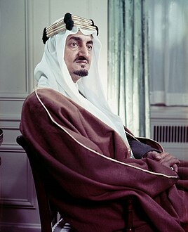

الملك فيصل بن عبد العزيز 1384هـ -1395هـ(1964-1975م)
بويع ملكاً على البلاد في عام 1384هـ (1964م)بعد تنازل أخيه الملكـ سعود ،وواصل مسيرة البناء التي بدأها والده الملكـ عبد العزيز وأكملها أخوه الملكـ سعود .
فقد شهدت المملكة العربية السعودية في عهد الملكـ فيصل كثيراً من التطورات في مجالات متعددة ،وأصبحت تتراس الاجتماعات الدولية ،والقمم العربية والاسلامية نتيجة لمكانتها الدولية ورسالتها السامية ،وفي مواجهة التكتلات الكبرى وانتشار الأفكار والمبادي المضلله تمكن الملك فيصل من توجيه الجهود العربية والإسلامية بقيادة المملكة العربية السعودية التي اصبحت مرتكزاً أساسياً في السياسات الدولية .

إنجازات الملك فيصل بن عبد العزيز أثناء فترة ولايته للعهد
- في عام 1958م، عُيّن رئيسًا للوزراء فقام بوضع تدابير صارمة لخفض الإنفاق بشكل كبير وذلك لإنقاذ خزينة الدولة من الإفلاس.
- في عام 1961م، ساعد في إنشاء الجامعة الإسلامية في المدينة المنورة.
- في عام 1962م، ساعد في تأسيس رابطة العالم الإسلامي.
- في عام 1962م، قام بوضع العديد من السياسات من أجل إنهاء العبودية.
- في عام 1963م، قام بإنشاء أول محطة تليفزيونية في المملكة العربية السعودية.
إنجازات الملك فيصل بن عبد العزيز أثناء فترة حكمه
- بعد انتهاء الحرب العربية مع الكيان الصهيوني (النكسة الفلسطينية) عام 1967م، قام بتقديم العديد من المساعدات والإعانات المالية لفلسطين ومصر وسوريا.
- في وقت مبكر من حكمه، قام بوضع سياسة تقضي بأنَّه على جميع الأمراء السعوديين تعليم أطفالهم داخل البلاد.
- أسس وزارة العدل وقام بوضع أول "خطة خمسية" للتنمية الاقتصادية في البلاد في عام 1970م.
- قام بسحب النفط السعودي من الأسواق العالمية، احتجاجًا على الدعم الغربي والأميركي للكيان الصهيوني في عام 1973م.
- حصل على لقب شخصية العام من مجلة تايم الإخبارية في عام 1974م.
- اهتم الملك فيصل بن عبد العزيز في البترول والمعادن المتوافرة في المملكة، حيث قام بإنشاء المؤسسة العامة للبترول والمعادن.